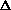
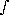
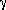

La Segunda Ley de la Termodinámica,
la Evolución y la Probabilidad
Derechos de autor © 1995-1997 por
Frank Steiger
Este documento puede ser reproducido sin regalías
para uso no lucrativo y no comercial.

Los creacionistas creen que la segunda ley de la termodinámica no permite que el orden surja del desorden, y por lo tanto, la macroevolución de seres vivos complejos a partir de antepasados unicelulares no pudo haber ocurrido. El argumento creacionista se basa en su interpretación de la relación entre la probabilidad y una propiedad termodinámica llamada "entropía".
A modo de antecedentes y con el fin de aclarar la postura creacionista, permítanme citar de la literatura creacionista:
El notable nacimiento del planeta Tierra, por Henry Morris:
(p. 14) Todos los procesos manifiestan una tendencia hacia la decadencia y la desintegración, con un aumento neto en lo que se llama la entropía, o estado de aleatoriedad o desorden, del sistema. Esto se llama la Segunda Ley de la Termodinámica.
(p. 19) Existe una tendencia universal para que todos los sistemas pasen del orden al desorden, como se establece en la Segunda Ley, y esta tendencia solo puede detenerse y revertirse bajo circunstancias muy especiales. Ya hemos visto, en el Capítulo I, que el desorden nunca puede producir orden mediante ningún tipo de proceso aleatorio. Debe estar presente alguna forma de código o programa, para dirigir el proceso de ordenamiento, y este código debe contener al menos tanta "información" como la necesaria para proporcionar esta dirección.
Además, debe estar presente algún tipo de mecanismo para convertir la energía ambiental en la energía requerida para producir la organización más alta del sistema involucrado. ...
Por lo tanto, cualquier sistema que experimente incluso un crecimiento temporal en orden y complejidad no solo debe estar "abierto" a la energía del sol, sino que también debe contener un "programa" para dirigir el crecimiento y un "mecanismo" para energizar el crecimiento.
Creacionismo Científico, editado por Henry Morris:
(p.25) La Segunda Ley (Ley de Decaimiento de la Energía) establece que todo sistema dejado a su propia suerte tiende siempre a pasar del orden al desorden, su energía tendiendo a transformarse en niveles más bajos de disponibilidad, llegando finalmente al estado de aleatoriedad completa e indisponibilidad para realizar más trabajo.
Por supuesto, la aplicación del creacionista de la segunda ley de la termodinámica al desarrollo de los seres vivos es inconsistente con cualquier modelo de origen. Los creacionistas eluden este problema invocando lo sobrenatural:
El Diluvio de Génesis, de Whitcomb y Morris:
(p. 223) ¡Pero durante el período de la Creación, Dios estaba introduciendo orden y organización en el universo en un grado muy alto, ¡incluso hasta la vida misma! Es así que resulta completamente claro que los procesos utilizados por Dios en la creación fueron totalmente diferentes de los procesos que ahora operan en el universo!
Como se mostrará más adelante, solo la entropía global de un sistema completo, o cerrado, debe aumentar cuando ocurre un cambio espontáneo. En el caso de subsistemas que interactúan espontáneamente dentro de un sistema cerrado, algunos pueden ganar entropía, mientras que otros pueden perder entropía. Por ejemplo, es un axioma fundamental de la termodinámica que cuando el calor fluye del subsistema A al subsistema B, la entropía de A disminuye y la entropía de B aumenta. La afirmación de que un aumento en el orden solo puede ocurrir como resultado de un mecanismo direccional, un programa o un código es engañosa. Cualquier proceso que se pueda demostrar que ocurre con un aumento en el orden/disminución en la entropía es arbitrariamente considerado como la consecuencia de un "mecanismo direccional" indefinido.
La probabilidad, tal como se utiliza en la termodinámica, significa la probabilidad de que ocurra algún cambio específico. La probabilidad está relacionada con el concepto termodinámico de irreversibilidad. Un cambio físico o químico irreversible es un cambio que no se revertirá espontáneamente sin algún cambio en las condiciones circundantes. Los cambios irreversibles tienen un alto grado de probabilidad. La probabilidad de que un cambio irreversible se revierta espontáneamente sin interferencia externa es cero.
Cuando decimos que un cambio es irreversible (en el sentido de la termodinámica), significa únicamente que el cambio no se revertirá espontáneamente sin algún cambio en las condiciones circundantes. No significa que no pueda ser revertido por ningún medio en absoluto.
Es importante recordar que un cambio que tiene un alto grado de probabilidad bajo un conjunto de circunstancias puede tener un grado muy bajo de probabilidad bajo un conjunto diferente de circunstancias. Para ilustrar: si la temperatura desciende por debajo del punto de congelación, la probabilidad de que el agua se convierta en hielo es muy alta. El cambio de agua a hielo es termodinámicamente irreversible. Si la temperatura circundante llegara a subir por encima del punto de congelación, la probabilidad de que el agua se convierta en hielo o permanezca como hielo es cero. Bajo estas condiciones, el cambio inverso de hielo a agua líquida también es termodinámicamente irreversible.
El fracaso en comprender que en termodinámica las probabilidades no son entidades fijas ha llevado a una interpretación errónea que es responsable de la creencia ampliamente extendida y totalmente falsa de que la segunda ley de la termodinámica no permite que el orden surja espontáneamente del desorden. De hecho, hay muchos ejemplos en la naturaleza donde el orden surge espontáneamente del desorden: Los copos de nieve con su simetría cristalina de seis caras se forman espontáneamente a partir de moléculas de vapor de agua que se mueven aleatoriamente. Las sales con planos precisos de simetría cristalina se forman espontáneamente cuando el agua se evapora de una solución. Las semillas brotan en plantas con flores y los huevos se desarrollan en polluelos.
Thermodynamics is an exact science that is based on a limited number of specific mathematical concepts. It is not explainable in terms of qualitative metaphors. In order to understand the relationship between probability and the second law, the reader must be familiar with the relationship between probability and entropy. Entropy is a mathematically defined entity which is the fundamental basis of the second law of thermodynamics and all of its engineering and physical chemistry ramifications.En las siguientes secciones intentaremos explicar la verdadera relación entre la entropía y la probabilidad y demostrar por qué esta relación no descarta la posibilidad de que el orden surja espontáneamente del desorden.
Al describir las leyes de la termodinámica, a menudo nos referimos a "sistemas". Un sistema es una entidad u objeto específico o una región en el espacio que se evalúa en función de sus propiedades termodinámicas y sus posibles cambios. Podría ser un cubo de hielo, un globo de juguete, una turbina de vapor o incluso la Tierra entera.
Entropía
El concepto de entropía es fundamental para comprender la segunda ley de la termodinámica. La entropía (o más específicamente, el aumento de entropía) se define como el calor (en calorías o Btu) absorbido por un sistema, dividido por la temperatura absoluta del sistema en el momento en que se absorbe el calor. La temperatura absoluta es el número de grados por encima del "cero absoluto", la temperatura más fría que puede existir.
La entropía total en un sistema se representa con el símbolo S. El símbolo

S se utiliza para representar un cambio dado en el contenido de entropía de un sistema. Si el símbolo q se utiliza para representar la cantidad de calor absorbido por un sistema, la ecuación para el aumento resultante de la entropía es:
S = q/T (1)
Where T is the absolute temperature.
When heat is absorbed, the entropy of a system increases; when heat
flows out of a system, its entropy decreases.
El "entorno" de un sistema es todo lo que está fuera del sistema y puede interactuar con él; el entorno puede definirse generalmente como el espacio que rodea a un sistema. Cuando un sistema libera calor, ese mismo calor es absorbido por su entorno. Cuando un sistema absorbe calor, ese mismo calor debe necesariamente provenir de su entorno. Por lo tanto, cualquier aumento de entropía en un sistema debido al flujo de calor debe ir acompañado de una disminución de entropía en el entorno, y viceversa. Cuando el calor fluye espontáneamente desde una región más caliente hacia una región más fría, la disminución de entropía en la región más caliente siempre será menor que el aumento de entropía en la región más fría, porque cuanto mayor sea la temperatura absoluta, menor será el cambio de entropía para cualquier flujo de calor particular. (Véase la ecuación 1, arriba)
Como ejemplo, considere el cambio de entropía cuando una gran roca a 500 grados absolutos se deja caer en agua a 650 grados absolutos. (Estamos utilizando una escala de temperatura absoluta basada en grados Fahrenheit; en esta escala, el agua se congela a 492 grados.) Para cada Btu de calor que fluye hacia la roca a estas temperaturas, el aumento de entropía en la roca es 1/500 = 0.0020 y la disminución de entropía del agua es 1/650 = 0.0015. La diferencia entre estos valores es 0.0020 - 0.0015 = 0.0005. Esto representa el aumento de entropía total del sistema (roca) y su entorno (agua).
Por supuesto, la roca se calentará hasta y el agua se enfriará hasta una temperatura intermedia entre sus temperaturas originales, complicando considerablemente el cálculo del cambio total de entropía una vez alcanzado el equilibrio. No obstante, para cada Btu de calor transferido del agua a la roca, siempre habrá un aumento de la entropía neta global.
Como se mencionó anteriormente, un cambio espontáneo es un cambio irreversible. Por lo tanto, un aumento en la entropía neta global puede utilizarse como medida de la irreversibilidad del flujo de calor espontáneo.
Los cambios irreversibles en un sistema pueden, y a menudo sí, ocurrir aunque no haya interacción y un flujo de calor despreciable entre el sistema y su entorno. En casos como estos, el "contenido" de entropía del sistema es mayor después del cambio que antes. Incluso cuando no ocurre flujo de calor entre el sistema y el entorno, los cambios espontáneos dentro de un sistema aislado siempre están acompañados por un aumento en la entropía del sistema, y este aumento calculado de entropía puede utilizarse como una medida de la irreversibilidad. Los párrafos siguientes explicarán cómo este aumento de entropía puede, al menos en algunos casos, calcularse.
Es un axioma de la termodinámica que la entropía, al igual que la temperatura, la presión, la densidad, etc., es una propiedad de un sistema y depende únicamente de la condición existente del sistema. Independientemente de los procedimientos seguidos para lograr una condición dada, el contenido de entropía para esa condición siempre es el mismo. En otras palabras, para cualquier conjunto dado de valores de presión, temperatura, densidad, composición, etc., solo puede haber un valor para el contenido de entropía. Es esencial recordar esto: Cuando un sistema que ha experimentado un cambio irreversible se restaura a su condición original (misma temperatura, presión, volumen, etc.), su contenido de entropía también será el mismo que antes.
En casos donde un sistema aislado experimenta un aumento de entropía como resultado de un cambio espontáneo dentro del sistema, podemos calcular dicho aumento de entropía postulando un procedimiento mediante el cual el aumento de entropía del sistema se transfiere al entorno de manera tal que no haya un aumento adicional en la entropía neta y el sistema se restablece a su condición original. El aumento de entropía del entorno puede entonces calcularse fácilmente mediante la ecuación (1): S = q/T, donde q = calor absorbido por el entorno, y T = temperatura absoluta del entorno.
Cabe repetir que cuando el sistema se restaura a su condición original, su contenido entrópico será el mismo que antes de su cambio irreversible. Por lo tanto, la cantidad de entropía absorbida por el entorno durante la restauración debe ser necesariamente la misma que el aumento de entropía que acompañó al cambio irreversible original del sistema, siempre que no haya un aumento adicional en la entropía neta durante la restauración.
Este procedimiento de restauración postulado y las propiedades postuladas del entorno tienen como único propósito el cálculo. Dado que no estamos tratando con el entorno en sí, este puede postularse en cualquier forma necesaria para simplificar los cálculos; no es necesario ni deseable que el entorno corresponda a alguna condición que pueda existir realmente. Por lo tanto, postularemos un procedimiento teórico de restauración que ocurre sin un aumento adicional de la entropía neta, aunque tal procedimiento no puede obtenerse experimentalmente.
El proceso de restauración, si tuviera lugar en la realidad, tendría que estar acompañado de al menos una pequeña cantidad de irreversibilidad, y por lo tanto de un aumento adicional en la entropía del entorno más allá del aumento de entropía derivado del cambio irreversible original del sistema. Esto se debe a que el calor no fluirá sin una diferencia de temperatura, la fricción no puede eliminarse por completo, etc. Por lo tanto, el proceso de restauración, si tiene lugar sin un aumento adicional en la entropía neta global, debe postularse que ocurre sin irreversibilidad. Si tal proceso pudiera realizarse realmente, se caracterizaría por un estado continuo de equilibrio (es decir, sin diferencias de presión o temperatura) y ocurriría a una velocidad tan lenta que requeriría un tiempo infinito. Procesos como estos se llaman procesos "reversibles". Recuerde, los procesos reversibles se postulan para simplificar el cálculo del cambio de entropía en un sistema; no es necesario que sean capaces de ser logrados experimentalmente.
No debe asumirse que la ecuación (1) requiere que q, el calor absorbido, deba ser necesariamente absorbido de manera reversible. El concepto de reversibilidad es meramente un medio para un fin: el cálculo del cambio de entropía que acompaña a un proceso irreversible.
El siguiente ejemplo ilustrará el cálculo de un proceso reversible de restauración y, al mismo tiempo, desarrollará la ecuación que es la base para la relación termodinámica entre la probabilidad y la segunda ley. Postularemos un sistema que consiste en un gas "ideal" contenido en un tanque conectado a un segundo tanque que ha sido completamente evacuado, con la válvula entre los dos tanques cerrada. La temperatura del sistema y su entorno se postula que es la misma. Un gas ideal es aquel cuyos moléculas son infinitamente pequeñas y no tienen fuerzas atractivas o repulsivas entre sí. (Bajo condiciones ordinarias, el hidrógeno y el helio se aproximan estrechamente a las propiedades de un gas ideal.) Se elige un gas ideal para desarrollar la relación básica sin introducir factores de corrección complicados para tener en cuenta el tamaño de las moléculas y las fuerzas que ejercen entre sí.
Cuando se abre la válvula, el gas se expande de manera irreversible desde V1 (su volumen original) hasta V2 (el volumen de ambos tanques). No hay trabajo de compresión realizado por o sobre el entorno. Dado que el gas es ideal, no hay cambio de temperatura, y por lo tanto, no tiene lugar ningún flujo de calor.
Después de expandirse de manera irreversible desde V1 hasta V2, el gas se restaura a su condición original mediante una compresión reversible que lo devuelve a V1. Esta compresión requiere trabajo (fuerza aplicada a lo largo de una distancia), lo cual genera calor en el gas, calor que es absorbido por el entorno de modo que no haya un aumento en la temperatura del gas. En nuestro modelo matemático de este proceso reversible de restauración, se postula que el entorno es tan grande que tampoco experimenta ningún aumento de temperatura. La temperatura T permanece inalterada durante toda la expansión irreversible y el posterior proceso de restauración reversible.
El trabajo realizado para comprimir el gas durante la restauración es igual a la presión del gas multiplicada por el cambio de volumen debido a la compresión. Dado que la presión aumenta durante la compresión, el trabajo de compresión debe determinarse mediante la integral de cálculo:
compression work = 
PdV
where: P = pressure
V = volume
dV = the small change in volume taking
place at the corresponding pressure P
The integral sign indicates the
summation of all the individual values of PdV.
La ecuación que relaciona la temperatura, la presión y el volumen de un gas ideal es:
PV = RT (2)
where: P = pressure
V = volume
T = absolute temperature
R = a constant which depends only on the
amount of gas present
En el caso de una compresión reversible e isotérmica de un gas ideal, podemos sustituir P de la ecuación (2) en la ecuación para el trabajo de compresión. Cuando esto se hace, tenemos:
compression work = RTdV/V (3)
Aunque no es necesario que nuestro proceso de restauración reversible postulado sea capaz de llevarse a cabo en un sentido práctico, no obstante, a veces es útil poder visualizar el proceso. Con este fin, el lector puede considerar el proceso de compresión restauradora que se produce mediante un émbolo ajustado en el extremo del segundo tanque. Al comprimir desde V2 hasta V1, el émbolo se mueve a lo largo de la longitud del segundo tanque y, sin fuerzas de fricción mecánica, devuelve todo el gas contenido en él al primer tanque V1.
Dado que el trabajo de compresión es igual a q, el calor absorbido por el entorno, q, puede sustituirse en la ecuación (3) para obtener:
q = RTdV/V (4)
From equation (1) the entropy gained by the surroundings during
restoration from V2 to V1 is:
S = q/T (1)
Substituting from equation (4):
S = RdV/V
Al integrar (un procedimiento de cálculo para sumar los valores individuales de dV/V) obtenemos:
S = Rln(V2/V1) (5)
Where ln(V2/V1) is the natural logarithm of the ratio of expanded
volume to the initial volume, and S is equal to
the entropy increase in the surroundings upon restoration compression
from V2 to V1. As we have seen, S is also equal
to the entropy increase of the gas caused by its original expansion
from V1 to V2. This is because V1 is the same volume both before
expansion and after restoration compression, and therefore has the
same entropy content. Therefore the entropy transferred to the
surroundings during restoration is equal to that gained by the system
in expanding from V1 to V2.
Entropía y Probabilidad
La razón entre la probabilidad de que todas las moléculas de gas estén distribuidas uniformemente entre los dos tanques y la probabilidad de que todas las moléculas, por su propia iniciativa y mediante movimiento aleatorio, se encuentren en el tanque V1 es igual a (V2/V1)N, donde N es el número de moléculas.
Si V2/V1 fuera igual a 2,0, por ejemplo, y N fuera igual a 10, la razón de probabilidades sería 2 elevado a la décima potencia, o 1024. Para N = 100, la razón sería aproximadamente 1,27 veces 10 elevado a la 30ª potencia. Es claro que el movimiento aleatorio de billones de moléculas de gas favorece fuertemente una distribución uniforme.
let X1 = the probability of all the gas molecules, after the valve is
opened, remaining in the first tank V1
let X2 = the probability of all the gas molecules, after the valve is
opened, being uniformly distributed in V2, the volume of both
tanks.
From the probability equation, we have:
X2/X1 = (V2/V1)N.
Taking the natural logarithm of both sides, and then multiplying both
sides by R, the gas constant:
R ln(X2/X1) = RN ln(V2/V1)
R/N ln(X2/X1) = R ln(V2/V1)
Substituting in equation (5):
S = R/N ln(X2/X1) (6)
La ecuación (6) representa la relación fundamental entre la probabilidad y la segunda ley de la termodinámica. Establece que la entropía de un sistema gaseoso aumenta cuando su distribución molecular cambia de una probabilidad menor a una mayor (X2 mayor que X1).
Basado en la creencia de que las leyes de la termodinámica son universales, se ha asumido que esta ecuación se aplica a todos los sistemas, no solo a los gaseosos. En otras palabras, cualquier cambio de entropía es proporcional al logaritmo de la razón de probabilidades. Por lo tanto, para el caso general la ecuación (6) puede escribirse:
S = K ln(X2/X1) (7)
Where K is a constant depending on the particular change involved.
However, individual values of K, X1, or X2 are seldom, if ever, known
for non-gaseous systems.
Como hemos visto anteriormente, S puede ser positivo o negativo. Cuando S es negativo, la ecuación (7) puede escribirse:
-S = -K ln(X2/X1)
= K ln(X1/X2)
Therefore un sistema puede pasar de un estado más probable (X2) a un estado menos probable (X1), siempre que S para el sistema sea negativo.
In cases where the system interacts with its surroundings, S can be negative proporcionando the over-all
entropy of the system and its interacting surroundings is positive;
the over-all change can be positive if the entropy increase of the
surroundings is numerically greater than the entropy decrease of the
system.
En el caso de la formación de las moléculas complejas características de los organismos vivos, los creacionistas plantean el punto de que cuando los seres vivos se descomponen después de la muerte, el proceso de descomposición tiene lugar con un aumento de entropía. También señalan, correctamente, que un cambio espontáneo en un sistema tiene lugar con un alto grado de probabilidad. Sin embargo, no se dan cuenta de que la probabilidad es relativa, y un cambio espontáneo en un sistema puede revertirse, siempre que el sistema interactúe con su entorno de tal manera que el aumento de entropía en el entorno sea más que suficiente para revertir el aumento original de entropía del sistema.
La aplicación de energía puede revertir una reacción espontánea, termodinámicamente "irreversible". Las hojas se quemarán espontáneamente (combinándose con oxígeno) para formar agua y dióxido de carbono. La energía del sol, a través del proceso de fotosíntesis, producirá hojas a partir de vapor de agua y dióxido de carbono, y formará oxígeno.
Si desconectamos un refrigerador, el calor fluirá hacia el interior desde el entorno; el aumento de entropía dentro del refrigerador será mayor que la disminución de entropía en el entorno, y el cambio neto de entropía es positivo. Si lo conectamos, este cambio espontáneo "irreversible" se invierte. Debido a la entrada de energía eléctrica al compresor, el calor transferido al entorno desde las bobinas del condensador es mayor que el calor extraído del refrigerador, y el aumento de entropía del entorno es mayor que la disminución de entropía del interior, a pesar de que el entorno está a una temperatura más alta. Una vez más, el cambio neto de entropía es positivo, como cabría esperar para cualquier proceso espontáneo.
De manera similar, la aplicación de energía eléctrica puede revertir la reacción espontánea del hidrógeno y el oxígeno para formar agua: cuando se hace pasar una corriente a través de una solución de agua, el hidrógeno se libera en un electrodo y el oxígeno en el otro.
Como es fácil confirmar experimentalmente, agitar el agua eleva su temperatura. Cuando el agua cae libremente desde una elevación más alta a una más baja, su energía se transforma de potencial a cinética y finalmente en calor al salpicar al final de su caída. La segunda ley de la termodinámica establece que el agua no se elevará espontáneamente a su elevación original utilizando el calor producido al salpicar como única fuente de energía. Para lograrlo se requeriría una máquina térmica que convirtiera todo el calor del salpicado en energía mecánica.
La eficiencia de una máquina térmica está limitada termodinámicamente por el ciclo de Carnot, que limita la eficiencia de cualquier máquina térmica a T/T, donde T es el aumento de temperatura debido al salpicado, y T es la temperatura absoluta. Dado que T es solo una pequeña fracción de T, no existe ningún dispositivo que pudiera construirse que permita que todo el agua salte espontáneamente de nuevo a su elevación anterior.
Podemos, al menos en teoría, calcular el aumento de entropía del agua resultante de su cambio irreversible al caer. De manera análoga a la utilizada en el ejemplo anterior, el aumento de entropía sería igual al calor generado por la agitación al salpicar, dividido por la temperatura absoluta. Si parte de la energía del agua en caída es extraída por una rueda hidráulica, habrá menos calor de salpicadura y, por tanto, menos aumento de entropía.
Una turbina bien diseñada podría extraer la mayor parte de la energía cinética del agua. Esto no es lo mismo que intentar utilizar el calor del salpicado como fuente de energía para un motor térmico para elevar el agua. En otras palabras, utilizar la energía antes de que se convierta en calor es mucho más eficiente que intentar utilizarla después de que se convierta en calor.
Si una rueda hidráulica está conectada mediante ejes, correas, poleas, etc., a una bomba, la bomba puede elevar el agua desde el lado aguas abajo de la rueda hidráulica a una elevación incluso mayor que la del reservorio aguas arriba. Alguno del agua se elevaría espontáneamente a una elevación incluso mayor que la original, pero el resto terminaría por debajo de la rueda hidráulica en el lado aguas abajo.
Aunque no es posible que toda el agua se eleve por sí misma a una elevación superior a su elevación inicial, sí es posible que alguna parte del agua se eleve espontáneamente a una elevación superior a la inicial.
Al igual que con cualquier otro cambio irreversible, habrá un aumento en la entropía global. Esto significa que el aumento de entropía del agua que pasa por la rueda es mayor que la disminución de entropía del agua bombeada a una elevación más alta.
Esto se confirmará matemáticamente en los párrafos siguientes.

representará la letra griega gamma, que denota el peso unitario en libras por pie cúbico. Un aumento en el valor de un parámetro se representará mediante .
Let: = unit weight of water, lbs./cubic foot
h = height of reservoir above downstream side, feet
h = potential energy of water in reservoir
h = additional height above reservoir (to which water is pumped)
h + h = height to which water is pumped, feet above downstream side
w = work of pumping water to higher elevation
q = heat loss due to pump friction and downstream agitation
f = fraction of water pumped to elevation h + h
From the flow equation, energy in = energy out:
h = q + w
Where: h = the total energy expended by the water
in falling from height h.
q = the energy wasted as heat of splashing
w = work expended in pumping the water to a higher elevation
q = TS (from equation 1)
w = f(h + h)
The total energy available, h, is divided into pump
work, f(h + h), and energy
lost, TS:
h = TS + f(h + h)
Rearranging:
TS = h - f(h + h) (8)
When no pump work is done, then:
TS' = h (9)
Combining equations (8) and (9), we get:
S' - S = f(h + h)/T (10)
In the case where the water falls freely without turning the water
wheel or operating the pump:
let q'= heat of splashing
q'= TS'
where S' is the entropy increase on free fall
Equation (10) shows that S' is larger than S, and that the entropy increase due to pump friction
and downstream agitation is "backed up" by the even larger entropy
increase that takes place when water falls freely.
Equation (10) also shows that the lower the value of S, the more efficient the pump, and the greater the
value of f, the fraction of water pumped.
Los creacionistas asumen que un cambio caracterizado por una disminución de la entropía no puede ocurrir bajo ninguna circunstancia. De hecho, las disminuciones espontáneas de entropía sí pueden y ocurren todo el tiempo, siempre que esté disponible suficiente energía. El hecho de que la rueda de agua y la bomba sean dispositivos construidos por el hombre no tiene relevancia para el caso: la termodinámica no se preocupa por la descripción detallada de un sistema; solo se ocupa de la relación entre los estados inicial y final de un sistema dado (en este caso, la rueda de agua y la bomba).
Un argumento favorito de los creacionistas es que la probabilidad de que ocurra la evolución es aproximadamente la misma que la probabilidad de que un tornado que atraviesa un patio de chatarra pueda formar un avión. Basan este argumento en su creencia de que los cambios en los seres vivos tienen una probabilidad muy baja y no podrían ocurrir sin un "diseño inteligente" que supere las leyes de la termodinámica. Esto representa una contradicción fundamental en la que (según ellos) la evolución es inconsistente con la termodinámica porque la termodinámica no permite que el orden surja espontáneamente del desorden, pero el creacionismo (bajo la apariencia de diseño inteligente) no tiene que ser consistente con las leyes de la termodinámica.
Una analogía más sencilla para el escenario del avión/vertedero sería la apilación de tres bloques ordenadamente uno encima del otro. Para hacer esto, se requiere diseño inteligente, pero el apilamiento no viola las leyes de la termodinámica. Las mismas relaciones se aplican a esta actividad como a cualquier otra actividad que implique cambios de energía termodinámica. Es cierto que los bloques no se apilarán por sí solos, pero en lo que respecta a la termodinámica, todo lo que se requiere es la energía para recogerlos y colocarlos uno encima del otro. La termodinámica simplemente correlaciona las relaciones de energía al pasar del estado A al estado B. Si las relaciones de energía lo permiten, el cambio puede ocurrir. Si no lo permiten, el cambio no puede ocurrir. Una pelota no saltará espontáneamente desde el suelo, pero si se deja caer, saltará espontáneamente hacia arriba desde el suelo. No importa si la pelota es levantada por diseño inteligente o simplemente cae por casualidad.
Por otro lado, la termodinámica no descarta la posibilidad de diseño inteligente; simplemente no es un factor en cuanto al cálculo de la probabilidad termodinámica.
Considerando la Tierra como un sistema, cualquier cambio que vaya acompañado de una disminución de la entropía (y por lo tanto, un retorno desde una probabilidad más alta a una más baja) es posible siempre que esté disponible suficiente energía. La fuente última de la mayor parte de esa energía es, por supuesto, el Sol.
El cálculo numérico de los cambios de entropía que acompañan a los cambios físicos y químicos está muy bien comprendido y constituye la base de la determinación matemática de la energía libre, las características de fuerza electromotriz de las celdas voltaicas, las constantes de equilibrio, los ciclos de refrigeración, los parámetros de operación de turbinas de vapor y una gran variedad de otros parámetros. La postura creacionista debería necesariamente descartar todo el marco matemático de la termodinámica y no proporcionaría ninguna base para el diseño de ingeniería de turbinas, unidades de refrigeración, bombas industriales, etc. Eliminaría las bien desarrolladas relaciones matemáticas de la fisicoquímica, incluyendo el efecto de la temperatura y la presión sobre las constantes de equilibrio y los cambios de fase.